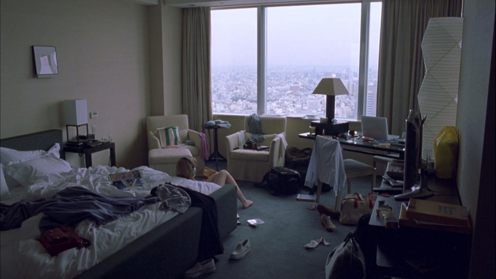

Coppola's desire to shoot in Tokyo, specifically at the Park Hyatt hotel, is what brought the film to life. The film was a challenge to make, with a low budget and a time frame of 27 days. Coppola wanted to make a film that was a romantic love story without being nerdy. The film was shot with a small crew, working without permits. Scenes were filmed impromptu on the street, while the hotel itself permitted them to use the corridors between two and three in the morning as not to disturb guests.The iconic wide shot of the umbrella-carrying crowds at Shihbuya Crossing was stolen on a trip to Starbucks. Discussing this iconic scene Coppola says “We went up there, got a coffee, and grabbed a shot looking down. It was very on-the-fly. We snuck around and played dumb tourists.” The film starred Bill Murray as a melancholy actor on a business trip and Scarlett Johansson as a college graduate in a new country struggling with loneliness. Johansson was the first to sign onto the project as the fresh-faced 17 year-old Hollywood newbie. It took several attempts before Coppola was able to secure Bill Murray for the role of Bob Harris.Coppola said that the film “lived or died” on the comedian agreeing to play the role. Coppola had Murray in mind for the role of Bob Harris while she was writing the screenplay. Coppola went to Tokyo and started filming without Murray officially signing on yet, hoping that he would show up. He finally agreed to sign onto the film after getting the script from a writing partner of his who also happened to be one of Coppola's friends. Coppola describes Lost in Translation as a “self-indulgent, personal project” that wouldn't resonate so the fact movie fans still come up to her and shower the film in praise in 2018 continues to surprise the director.